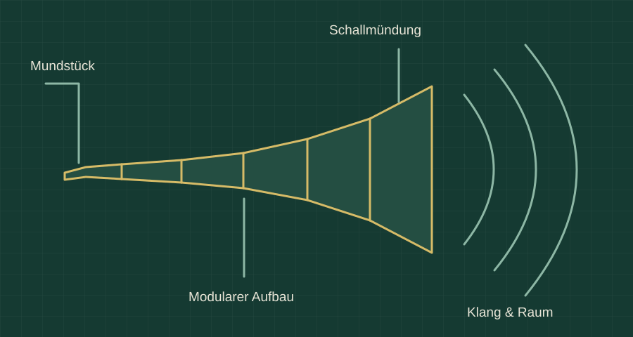

BSVRB / Grimmhorn
Grimmhorn
Ein Instrument zwischen Klang und Körper.
Grimmhorn untersucht ein tief klingendes Horn als Instrument und Klangskulptur. Im Mittelpunkt steht die Frage, wie Atem, Form und Resonanz einen Klang erzeugen können, der auch körperlich wahrgenommen wird.

Aus dem Horn heraus denken
Alpine Hörner und andere Blasinstrumente bilden einen gestalterischen Bezug. Daraus entsteht ein eigenständiges Experiment mit Tiefton, Raumwirkung und Performance.
Mundstück und Aufbau erproben
Ein anpassbares Mundstück aus dem 3D-Drucker und ein modularer Aufbau gehören zu den untersuchten Möglichkeiten. Der Entwurf soll sich transportieren und für Versuche zusammensetzen lassen.
Wirkung untersuchen
Hörbarer Klang und fühlbare Schwingung sind die Forschungsfragen des Projekts. Frequenzangaben und Wirkungsversprechen aus Entwürfen ersetzen keine Messung am gebauten Instrument.
Eine klare visuelle Sprache
Die Darstellung folgt dem Wunsch nach einer erwachsenen, technisch ruhigen Gestaltung. Die Zeichnung erklärt Mundstück, Segmente und Mündung als Konzept; sie ist kein Foto eines fertigen Instruments.